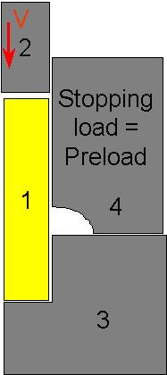
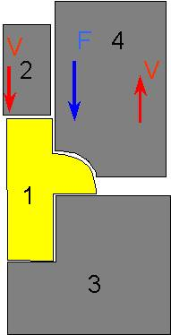
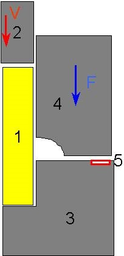
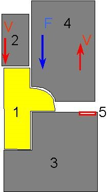

Overview:
A simulation of a spring-loaded sliding die can be broken down into three typical phases of sliding die movement
Force on the sliding die is below the preload - die is stationary resting on a stop or another die.
Force on die exceeds preload - die begins moving under spring load control.
Die hits a stop - forming process completes with die stationary.
Note:
Depending on the type of sliding die being modeled, this behavior may or may not be fully realized in any particular simulation. For example, some pneumatic springs don't require the modeling of a preload. In such a case, the first phase can be omitted.
Methods for modeling sliding dies in DEFORM®:
Option 1: Make the sliding die as primary die, use load and/or stroke stopping controls to stop the simulation when die starts (Preload exceeded) or stops motion (spring goes solid), then change movement controls and restart.
Option 2: Use artificial elastic spacer (s) to allow the spring-loaded die to react against deformable body, and allow simulation to run through. (More initial setup time but less intervention during run time)
Option 1 described:
Phase 1: (See Fig. AXII.1.)
Set object 2 velocity control.
Object 4 primary die, no movement control.
Stop on load = preload on object 4.
Step control by time (primary die is not moving).
Phase 2: (See Fig. AXII.2.)
Object 4 load control. Direction should be direction load is applied, not direction of movement.
If movement of object 4 is limited, stop on stroke can be set.

Sketch of spring-loaded die simulation with spring-loaded die set with a stopping criteria based on load

Sketch of spring-loaded die simulation with spring-loaded die set with movement type based on load
Option 2 described: Using an artificial elastic “spacer” (See Fig. AXII.3. and Fig. AXII.4.)
Create a thin elastic object (5 in this case) with about 10-20 elements
Make object 5 slave to both objects 3 and 4.
Set movement on object 4 to load control, with the load as the preload.
Run the simulation. When load exceeds preload, die will automatically move up.

Sketch of spring-loaded die simulation with spring-loaded die set with movement type based on load and an additional elastic body (5) that provides a reaction force for the spring-loaded die (4).

Sketch of spring-loaded die simulation with spring-loaded die set with movement type based on load and an additional elastic body. At this stage, the material has filled beneath the sliding die and is pushing the sliding die upward.
Related Topics: